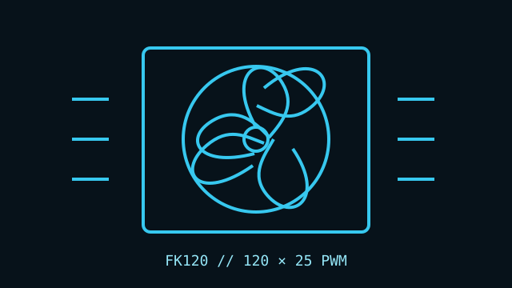

[ IDENTIFIED SKU // R-FK120-BKNPF1-G-1 ]
DeepCool FK120
A 120 mm PWM fan sold individually or in multi-fan packs. The single-fan product number recorded here is R-FK120-BKNPF1-G-1.

Exact identity: FK120 single fan, product number R-FK120-BKNPF1-G-1. Confirm package contents and SKU on the label.
Specifications
| Frame | 120 × 120 × 25 mm |
|---|---|
| Speed / airflow / pressure / noise | 500–1850 RPM ±10%; up to 68.99 CFM; 2.19 mmAq; ≤28 dB(A). |
| Bearing | Fluid Dynamic Bearing |
| Connector / control | 4-pin fan connector; PWM control. |
| Electrical | 12 V DC rated; 0.12 A rated current; 1.44 W. |
| Fit and host compatibility | 120 mm case or radiator mount with 25 mm available depth; DeepCool describes the fan for case, heatsink, and radiator use. Verify mount pattern, screw length, and fan header/controller current budget. |
Installation
Observe the airflow arrow on the frame and check radiator and case clearance. Connect to a compatible 4-pin PWM header/controller and account for the fan's current in shared-header limits.
Manufacturer sources
- DeepCool — FK120 product pageModel-specific product identification and specifications.
- DeepCool — FK120 launch and technical overviewManufacturer announcement covers speed, airflow, pressure, bearing, and cooling applications.